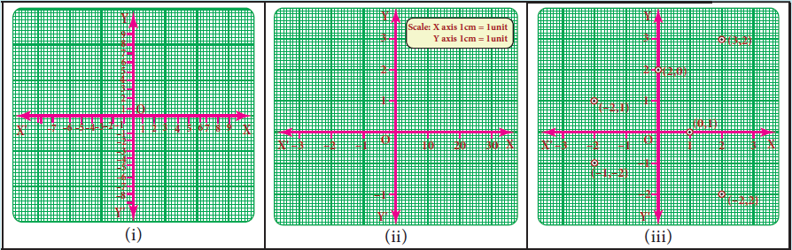
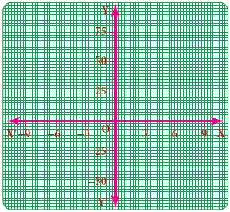
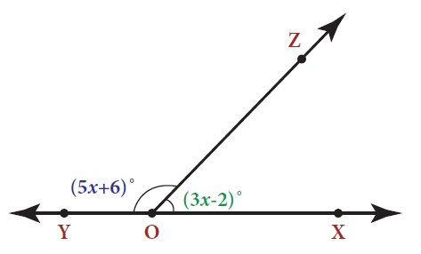
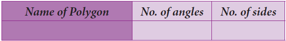
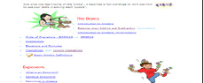
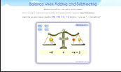
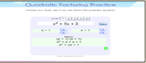
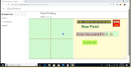
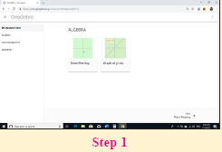
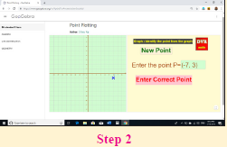

The orientation of the graph will be different according to the scale chosen.
We have now five points of the graph: open bracket minus 2 comma minus1 close bracket open bracket minus 1 comma 0 close bracket open bracket 0 comma 1 close bracket open bracket 1 comma 2 close bracket and open bracket 2 comma 3 close bracket.
Identify and correct the errors

Exercise 3.9
1. Fill in the blanks:
First one y is equal to px where p belongs to z always passes through the DASH.
Second one The intersecting point of the line x is equal to 4 and y is equal to minus 4 is DASH.
Page number 117
Third one Scale for the given graph,
On the x axis 1 cm is equal to DASH units
Y axis 1 cm is equal to DASH units

2. Say True or False.
First one The points open bracket 1 comma 1 close bracket open bracket 2 comma 2 close bracket open bracket 3 comma 3 close bracket lie on a same straight line.
Second one y equal to minus 9x not passes through the origin.
3. Will a line pass through open bracket 2 comma 2 close bracket if it intersects the axes at open bracket 2 comma 0 close bracket and open bracket 0 comma 2 close bracket.
4. A line passing through open bracket 4 comma minus 2 close bracket and intersects the Y axis at open bracket 0 comma 2 close bracket . Find a point on the line in the second quadrant.
5. If the points P open bracket 5 comma 3 close bracket Q open bracket minus 3 comma 3 close bracket R open bracket minus 3 comma minus 4 close bracket and S form a rectangle, then find the coordinate of S.
6. A line passes through open bracket 6 comma 0 close bracket and open bracket 0 comma 6 close bracket and another line passes through open bracket minus 3 comma 0 close bracket and open bracket 0 comma minus 3 close bracket. What are the points to be joined to get a trapezium question mark
7. Find the point of intersection of the line joining points open bracket minus 3 comma 7 close bracket open bracket 2 comma minus 4 close bracket and open bracket 4 comma 6 close bracket open bracket minus 5 comma minus 7 close bracket. Also find the point of intersection of these lines and also their intersection with the axis.
8. Draw the graph of the following equations, first one x is equal to minus 7 second one y is equal to 6
9. Draw the graph of first one y is equal to minus 3 x second one y is equal to x minus 4 third one y is equal to 2 x + 5
10. Find the values.
A ) Y is equal to x + 3
X |
0 |
Dash |
Minus 2 |
Dash |
Y |
Dash |
0 |
dash |
Minus 3 |
B) 2 x + y minus 6 is equal to 0
X |
0 |
Dash |
Minus 1 |
Dash |
Y |
Dash |
0 |
dash |
Minus 2 |
C) y is equal to 3 x + 1
X |
Minus 1 |
0 |
1 |
2 |
y |
Dash |
Dash |
Dash |
dash |
Exercise 3.10
Miscellaneous Practice Problems

Side of a square (centimetre) |
2 |
3 |
4 |
5 |
6 |
Area (centimetre power 2) |
4 |
9 |
16 |
25 |
36 |
Does the graph represent a linear relation question mark
Page number 118
Challenging Problems
travel in a van. How many students were there in each bus question mark
8 A mobile vendor has 22 items, some which are pencils and others are ball pens. On a
particular day, he is able to sell the pencils and ball pens. Pencils are sold for rupees 15 each and ball pens are sold at rupees 20 each. If the total sale amount with the vendor is rupees 380, how many pencils did he sell question mark
Is there anything special that you find in these graphs question mark

Use this to draw a graph illustrating the relationship between the number of angles and the
number of sides of a polygon.
SUMMARY
monomial.
Open bracket a plus b close bracket the whole power 2 is equal to a power 2 plus 2ab plus p power 2
Open bracket a minus b close bracket the whole power 2 is equal to a power 2 minus 2ab plus p power 2
Open bracket a power 2 minus b power 2 close bracket is equal to a plus b multiplied by a minus b
Open bracket x plus a close bracket open bracket x plus b is equal to x power 2 plus a plus b multiplied by x plus a b
open bracket a + b close bracket the whole power 3 is equal to a power 3 + 3 multiplied by a power 2 multilied by b + 3 multiplied by a multiplied by b power 2 + b power 3
a minus b the whole power 3 is equal to a power 3 minus 3 multiplied by a power 2 multiplied by b + 3 multiplied by a multiplied by b power 2 minus b power 3
open bracket x + a close bracket multiplied by open bracket x + b close bracket multiplied by open bracket x + c close bracket is equal to x power 3 + open bracket a + b + c close bracket multiplied by x power 2 + open bracket a b + b c + c a close bracket multiplied by x + a b c
Page number 119
I c t corner



Web u r l algebra:
https://www.mathsisfun.com/algebra/index.html
pictures are indicatives only.
If browser requires, allow flash player or java script to load the page.
I C T CORNER



Browse in the link
Algebra
https://www.geogebra.org/m/fqxbd7rz#chapter/409574 or scan the q r code
page number 120
The following conversation happens in a Math class of eigth Standard.
Teacher: Dear students, money collection is being made for the Flag Day and so far, 32 out of 40 students in Seventh Standard and 42 out of 50 students from our class have contributed. Can anyone of you say, whose contribution is better question mark
Sankar: Teacher, 32 out of 40 is 32 divided by 40 and 42 out of 50 is 42 divided by 50. The corresponding like fractions of them
Are divided by and divided by respectively. So, our class students’ contribution is better.
Teacher: Very Good, Sankar. Students, is there any other way to compare question mark
Bumrah : Yes Teacher, percentage will help. Here,32divided by 40 equal to 32divided by 40 multiply by 80 percentage and 42divided by 50 equal to 42divided by 50 multiply by 100 equal to 84 percentage
Clearly, our class contribution is 4 percentage more than seventh Std.
Teacher: Well, done, Bumrah. You are exactly correct. Can anyone of you say where the use
of percentages is seen more question mark
Bhuvi: Yes Teacher. My father told me that percentages are used in the calculation of profit, loss, discount, calculation of tax open bracket example GOODS AND SERVICES TAX close bracket, interest on investment, growth in population and depreciation of machines and almost everywhere where comparison is made. He also had
told me that it is an easy tool which is helpful to compare values.
Teacher: Well said, Bhuvi. These are the topics what we are going to see in this chapter using
percentages.
Page number 121
The above conversation leads the way to know the application of percentages in various situations and in the commonly seen problems in our day to day life. We will also see direct and inverse proportions, compound variation and time and work problems topics later.